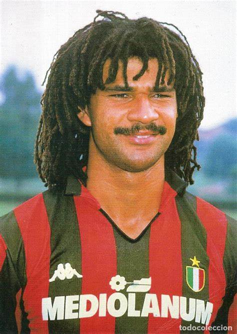
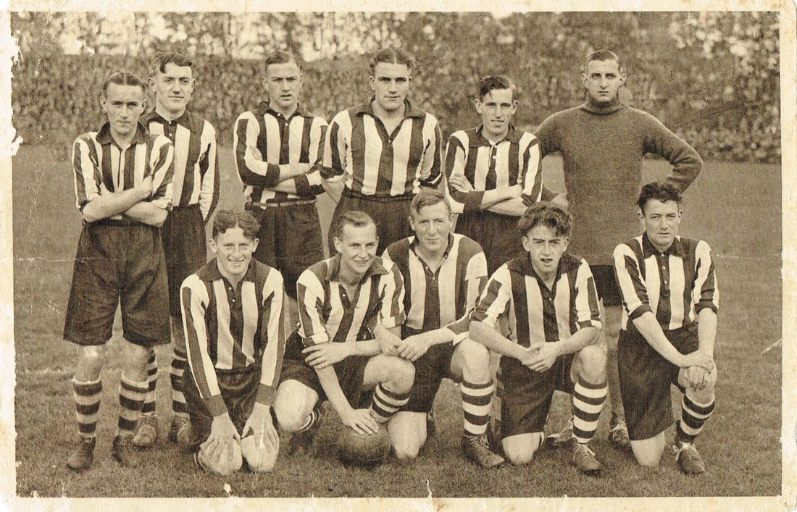
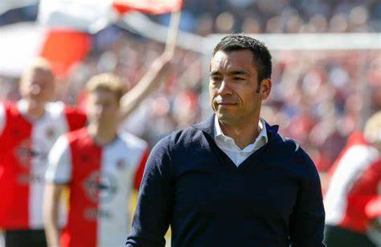

Feyenoord legendes
We weten allemaal dat Feyenoord een aantal van de beste spelers in Nederland heeft gehad.maar wij waren nou echt de beste van de beste? Ik heb hier de spelers die volgens mij de grootste invloed hebben gahed als het om Feyenoord gaat.
Coen Moulijn Je krijgt niet zomaar de bijnaam “Mr. Feyenoord.” Hij speelde bijna 500 wedstrijden voor de club (487) en scoorde daar 84 maal. De ongekende publieksfavoriet was bijna weggegaan bij Feyenoord omdat hij een aanbieding kreeg van Barcelona. Hij kon op onnavolgbare wijze verdedigers passeren en was een begenadigde technicus. Er staat niet voor niets een standbeeld bij De Kuip van Coen.
Willem van Hanegem De toevoeging van deze middenvelder bleek in 1968 echt het ontbrekende deel van de puzzel. Hij was niet bijzonder snel en kreeg de bijnaam ‘De Kromme’ vanwege zijn lichaamshouding. Maar dankzij zijn spelinzicht en zijn ongekende traptechniek had hij de snelheid ook niet echt nodig.
er zijn er nog veel meer natuurlijk zoals:
Rinus Israël Het is natuurlijk wel frappant dat een van de iconen van Feyenoord is geboren en getogen in Amsterdam. Hij was een onderdeel van het centrale verdedigingsduo met Feyenoord samen met Theo “De Tank” Laseroms. Dit tandem stond er vooral om bekend dat ze behoorlijk hard konden ingrijpen. Natuurlijk was hij niet alleen een bikkelharde verdediger maar ook de rots in de branding.
József Kiprich De Hongaar József Kiprich werd in het seizoen 1989/1990 als nieuwe spits gepresenteerd. Hij zag er misschien wat slungelachtig uit, maar al snel bleek dat hij een neusje had voor het doel. Hij kreeg al snel de bijnaam de Tovenaar van Tatabánya. Hij groeide ook uit tot publiekslieveling omdat hij een echte teamspeler was en buitengewoon bescheiden. Hij maakte het eerste doelpunt tegen MVV in de op dat moment mogelijk beslissende wedstrijd tijdens het seizoen 1992/1993.
Wim Jansen Als we even terugblikken naar het grote Feyenoord uit het eind van de jaren zestig dan was Wim Jansen daar een cruciaal onderdeel van. Hij loste veel problemen op met zijn voetbal intelligentie en kon ook nog eens op verschillende posities spelen. Hij speelde in totaal 422 wedstrijden voor Feyenoord en als echte Rotterdammer was het dan ook een behoorlijke schok dat hij uiteindelijk ook nog voor Ajax te tekenen – de aartsrivaal. Natuurlijk is het uiteindelijk nog goed gekomen tussen speler en club, want hij is eerst nog trainer geweest bij Feyenoord en vervolgens technisch directeur.
En natuurlijk zijn er nog meer speciale en waardevolle spelers geweest bij Feyenoord. Neem BVB Dirk Kuyt of Robin van Persie, 2 splers die beide extreem waardevol zijn gewest bij Feyenoord. Maar het blijft natuurlijk niet alleen bij spelers,Feyenoord heeft ook veel belangrijke mangers gehad zoalsgiovanni van bronckhorst en Arne slot de man die nu onder lijding staat in Rotterdam-zuid.
Maar ook een speler als Ruud Gullit mag niet vergeten worden, een man die Feyenoord zoveel heeft gebracht en altijd als hij weer op het veld stapte in die rood witte kleuren er zo hard voor werkten. en ook net iets mindere spelers mogen niet vergeten worden zoals Guidetti en Vilhena die Feyenoord ook nog zoveel geholpen hebben, al zijn ze misschien net iets minder als spelers als Gullit toch waren ze nog extreem belangrijk voor Feyenoord.